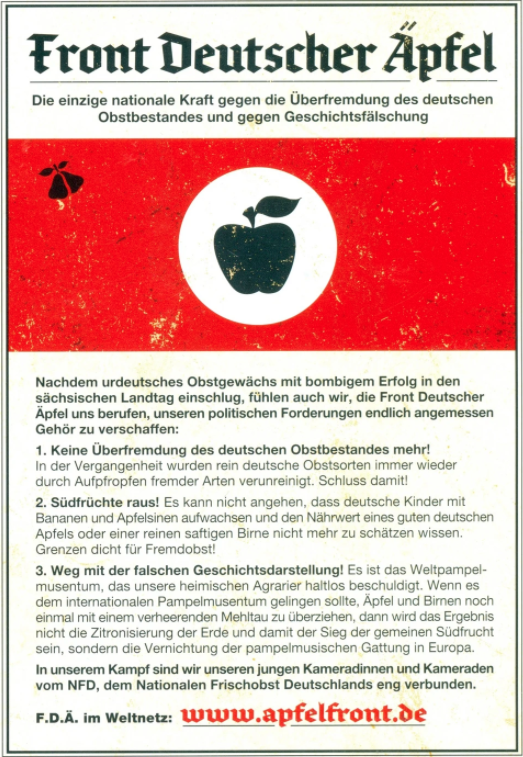

![]()
Counter-mobilisation against far-right activism takes many forms, adopts many practices—but humour is one of the most persistent tactics. Time and again far-right movement organisations carry out actions laden with pretensions of gravity and solemnity: Nazis mourning Rudolf Hess on the anniversary of his suicide; Ku Klux Klan members protesting against the removal of Confederate flags from U.S. state houses; Hindu extremists ‘protecting people from immorality’ by assaulting men and women gathered together in a pub; black-clad ‘soldiers of Odin’ patrolling streets in Finland, are just a few examples.
To undermine these activities, anti-fascist activists have repeatedly turned to ‘tactical frivolity’ or calculated silliness to disrupt the attempts of far-right groups to perform dignified actions. Some examples include converting a Nazi march route into an involuntary walkathon to raise money for anti-extremism social work; ‘mooning’ KKK members and playing comical tuba music during their march; mailing pink panties to violent Hindu conservatives; and a posse of clowns ‘protecting’ right-wing vigilante patrollers exemplify the use of japes and mockery to counter the far right.
Humour can serve several purposes. In order to illustrate these, this article examines the emergence of humour as a tactic in activism in Germany and the example of the Front Deutscher Äpfel, a case which demonstrates the utility of satire among counter-mobilising activists and, specifically, against far-right groups.
Spaßguerillas or ‘Fun fighters’
In the broadest terms, the use of humour by social movements serves two types of purposes: internal and external. Within movements, humour often comprises the brick and mortar of collective identity; jokes about the movement’s activism and the place of opponents helps cement cognitive, moral, and emotional connections between members. Humour also offers enhanced mobilising potential: the prospect of fun activism typically has greater appeal to potential members than more stolid activity.
Alone, these advantages—attracting new members and promoting in-group solidarity—make humour a worthwhile attribute for social movements. But it can also serve external purposes. For example, framing opponents’ claims or stances in a humorous way subverts them, denying their legitimacy. Such ridiculing can effect a sort of ‘soft repression’ on opposing activists. It may offer greater prospects of persuading bystanders, too. Social movement activists can use humour to break out of entrenched positions and frame opponents from a more advantageous perspective. Thus, as Rachel Kutz-Flamenbaum writes:
Humour is a core communicative strategy used to build affiliative ties, expand groups, strengthen communities, and attempt to educate, entertain, and persuade. In its ability to disarm and entertain, humour holds profound potential for changing people’s minds and promoting social change.
In Germany, humour became established in the panoply of social movement tactics as a response to rigid social mores and, at times, authoritarian conduct by state authorities. These same characteristics later suggested humour as a useful means to counteract far-right activism, which typically prizes traditional social norms and authoritarian leadership.
West Germany in the 1960s was in many ways characterised by enduring authoritarian attitudes and practices. On the one hand, the end of de-nazification drives allowed former members of Hitler’s regime to return to important positions in business and state administration in the late 1940s and early 1950s. On the other hand, anti-communism was a hegemonic precept in the West German state and society, so authorities tended to respond to leftist student activists with repression, even if the activists had no truck with the ideology represented by East Germany or the Soviet Union.
In this context, as Simon Teune writes, a group of activists sought ‘new forms of protest designed to overcome the limits of classic street demonstrations, characterised by distance between the public and demonstrators and by confrontation with the police.’ These were the Spaßguerillas, the ‘fun-fighters.’
Fun-fighter activists emerged from the Sozialistischen Deutschen Studentenbund (SDS, ‘German Socialist Student Union’), where some members already recognised the need for some levity to help mobilise participants and strengthen morale. Wolfgang Lefèvre, a leading figure of the SDS, wrote in 1966:
‘Every event or demonstration should be inventively planned so that it is exciting and fun for students.’
Fun-fighters like Fritz Teufel and Rainer Langhans adopted this approach. Playful tactics—such as planning to throw pie and pudding at U.S. Vice President Hubert Humphrey, ironically supporting the partisan sensationalism of the right-wing Springer press, and making a mockery of court proceedings—could ‘mobilise young people, who could not get started with Marxist analyses and joyless demonstrations, but who still wanted to criticise the current state of affairs.’
They also realised it could serve instrumental purposes. While on trial for flimsy charges of incitement to violence, Teufel and Langhans took every opportunity to undermine the petty authoritarianism of the judiciary. Teufel embodied this mockery with his reluctance to stand for the judge, eventually rising only with the dismissive comment, ‘if it serves the search for truth.’
Front Deutscher Äpfel
Later anti-fascist activism in Germany bears the stamp of the Spaßguerillas, most notably in the imperative to make counter-action engaging to participants and observers alike. The Front Deutscher Äpfel (‘Front of German Apples’), also known as the Apfelfront, represents one type of heir to the fun-fighter legacy, embracing performative mimicry as a means of satirising the far right.
The Front Deutscher Äpfel was formed in 2004, after the September election to Saxony’s regional parliament (Landtag). The right-wing extremist Nationaldemokratische Partei Deutschlands (NPD, ‘National Democratic Party of Germany’) was conspicuously successful in that election, increasing its vote share by 7.2 per cent (the biggest gain of any party) and winning 9.2 percent of the overall vote.
Inspired by the name of the regional NPD party leader, Holger Apfel, a group of artists in Leipzig organised the first Apfelfront demonstration as a response to the election as well as to the announcement of a far-right demonstration in the leftist neighbourhood of south Lepizig. Like the fun-fighters, the Apfelfront eschewed the conventional response to public far-right activism: disruptive counter-demonstrations met by varyingly suppressive police deployments. Instead, when a well-known far-right leader with connections to the NPD organised a demonstration, the Apfelfront came in traditional fascist style: black button-downs with red armbands, but with the silhouette of an apple rather than a swastika.
German far-right activists typically adhere to two dictates: do not explicitly glorify the Nazi regime or display any proscribed symbols, both of which are prohibited under German law, and make a powerful show of the far-right’s mobilisation capacity. The Apfelfront undermined both these aims, comically heightening the identification with the Nazis and making a farce of the forceful far-right mobilisation with patently silly behaviour.
During nearly ten years of activism the Apfelfront echoed several elements characteristic of the Nazi regime: the Apfelfront’s founder, Alf Thum, was referred to as the ‘Führer’; the Nationales Frischobst Deutschland (‘National Fresh Fruit of Germany’) was their Hitler Youth; and the Bund weicher Birnen (‘League of Soft Pears’) was their League of German Girls. (Having a ‘soft pear’ is a German idiom meaning ‘very stupid.’)
The Apfelfront repeatedly asserted the tenets of their fruit-based nationalism: (1) no more foreign domination of German fruit stock, (2) expel tropical fruits, (3) get rid of the false representation of history propagated by the world conspiracy of grapefruits. By parodying the Nazi regime and its far-right sympathizers, Apfelfront activists aimed to subvert legitimacy, to deny the menacing posture of the far right and instead make it an object of fun.

Aside from undermining the far right’s legitimacy, adopting the ‘fun-fighter approach’ serves two distinct objectives, as the case of Apfelfront clearly illustrates. First, Apfelfront antics—essentially, various forms of over-identification with xenophobic attitudes and the National Socialist regime, albeit in the realm of groceries—ease tensions in a setting fraught with the heavy antagonisms of opposed demonstrations and taut police peacekeeping deployments.
Police officers acknowledge this effect; many could not help but laugh when the (male) Apfelfront Führer shouted that he ‘wants to have the far-right leader’s baby.’ Apfelfront humour intentionally de-escalates the situation on the street and likely goes some way toward charming police, which might otherwise view the counter-demonstrators as aggressive troublemakers.
Yet more important is escaping the hackneyed, frequently ineffectual or even detrimental, pattern of hostile duelling demonstrations. Movements-countermovement pairs like the far right and anti-fascists often fall into modes of engagement characterised by ‘polarisation, dependency, Manichaeism, and imitation.’ Playfully imitating the far right and superficially ignoring the ‘us-them’ division disrupts these fixed patterns of antagonism. The tactics employed by the Apfelfront activists, like the fun-fighters before them, attempt to undermine their targets with ridicule.
The use of humour is no panacea. Tactical frivolity is neither necessary nor sufficient to cause the demobilisation of far-right groups or campaigns. But it can serve many useful purposes, which is why the approach modelled by the fun-fighters and exemplified by the Apfelfront continues to influence counter-mobilisation against the far right. In the many instances where far-right activity attempts to exhibit solemnity, gravity, or strength, a well-aimed joke is a powerful act of resistance.
Originally published as a blog with the Centre for the Analysis of the Radical Right: https://www.radicalrightanalysis.com/2020/08/06/how-to-laugh-away-the-far-right-lessons-from-germany/